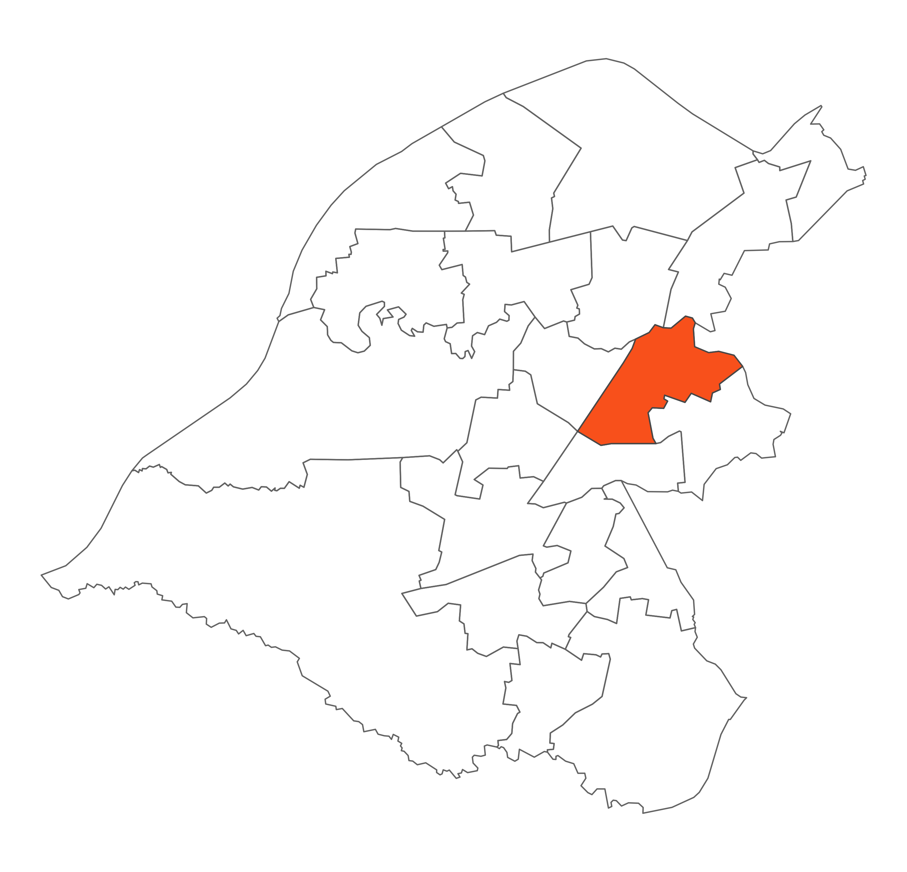

 Priory ward is home to Sale Town Centre, Sale Waterside and the Town Hall and Sale Water Park with its Water Sports Centre, Worthington Park, Walkden Gardens, and Priory Woods. Priory ward is bounded to the north by the River Mersey and to the east by the residential areas of Sale Moor; Ashton on Mersey lies to the west and Brooklands to the south. The M60 motorway, A56 Chester Road and the Bridgewater Canal all run through the Ward.